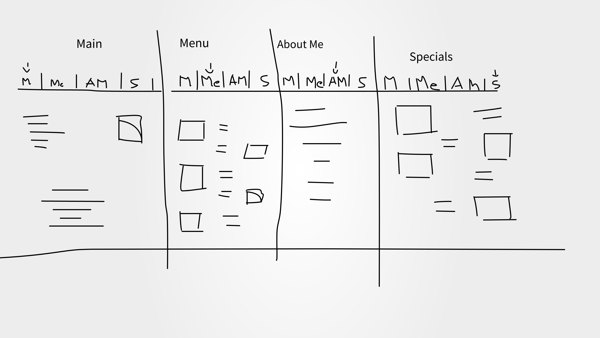

Introductory email from client:Petite Treats We are a small family-run local business, operating in Kirwan since 2012, hoping to improve our business by getting on the Internet. Our bakery is located at 123 Prize Lane in Kirwan, Queensland. We specialise in traditional Australian baked goods. We are currently in the process of getting some images created, so please just choose some ones for placeholders at the moment so we can see what it will look like.
Expand their business and create an online pressence for their bakery to help expand them.
The success can be evaluated onnce the reviews from others start flooding into the general reviews and their business begins collecting more people from the target audience.
We have customers of all ages, however, we would like to attract young families and young people, possibly around the age of 17 – 35, to our bakery.
Most of the pages will contain images and a little bit of words or sentences but the about us will contain some of the juicy bits. As for the content of most of these pages it will include nothing but images and quotes with a bit of pricing. This page will not have that much written content on select pages.
The images will be located in menu an special for the varying types in organized menu fashion as to avoid just a regular list, it will be changed depending on the size of the images and will be neatly alligned
The page will have the same navbar and footer an only a varying body section, in the case of home and specials it will change from having a description and announcements or comments to a select few discounts, but for the most part the pages will look the same.
In case of fonts I will be using, the cookie font. https://fonts.google.com/specimen/Cookie
This project should not take too long, once the navbar and footer are designed they will remain constant on most pages, and the theme wont change too much, will keep the theme simple with a bit of coloring an inovative designs for some of the images and texts
Depending on the domain bought most of the domains besides the org and such, which means it wouldnt profit or are generally implied. The possible range you could have to make would vary and could increase by quite a bit. However, the hosting will be much cheaper since this won't be a heavily serviced website, people will log on and log off so it shouldnt cost as much.